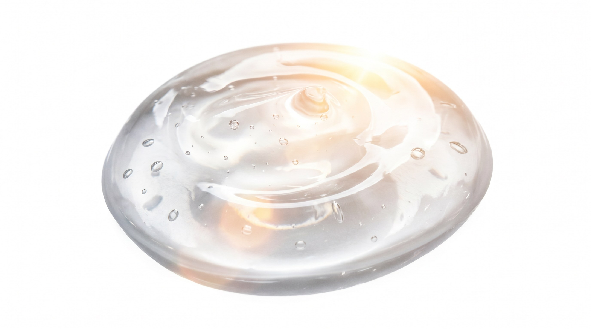

강한 자외선
일상적인 선케어를 우선순위에 두고, 매일 사용할 수 있는 편안함을 함께 고려합니다.

뷰티 & 이노베이션
좋은 원료에서 시작해 피부에 닿는 마지막 감각까지,
기능과 사용감의 균형을 반복해서 조정합니다.
개발 철학
JH SEOUL은 성분표만 좋은 제품보다 실제로 매일 사용하고 싶은 제품을 목표로 합니다. 원료와 기술, 제조 파트너를 직접 비교하고 샘플의 질감·흡수감·끈적임·쿨링감·마무리감을 반복해서 확인합니다.
강한 자외선과 덥고 습한 환경에서도 부담 없이 사용할 수 있도록 기능은 충분하게, 사용감은 산뜻하게 설계합니다. 기준에 닿지 않으면 다시 만들고, 더 나은 선택이 있다면 다시 검토합니다.

시장과 기후
인도와 중국처럼 자외선이 강하고 고온다습한 환경에서는 기능뿐 아니라 사용감이 제품 선택을 좌우합니다. 무겁고 끈적이는 제형은 꾸준히 사용하기 어렵기 때문에, 보호 기능과 산뜻함을 동시에 만족시키는 균형이 중요합니다.
일상적인 선케어를 우선순위에 두고, 매일 사용할 수 있는 편안함을 함께 고려합니다.
끈적임과 번들거림을 줄이고 답답함이 적은 제형을 중요하게 봅니다.
쿨링과 수분감을 통해 피부가 편안하게 느껴지는 사용감을 설계합니다.

핵심 개발 기준
강한 자외선 환경에서도 일상적으로 사용할 수 있는 선케어 방향을 우선합니다. 기능성 표현은 실제 심사·보고 범위에 맞춰 적용합니다.
피부 톤과 탄력 고민을 함께 고려해 기능과 일상 사용성의 균형을 찾습니다.
열감이 느껴지는 피부를 편안하게 하고 충분한 수분감을 유지하도록 설계합니다.
덥고 습한 기후에서도 끈적임과 답답함이 적은 사용감을 중요하게 봅니다.

제형과 사용감
좋은 성분을 많이 넣는 것만으로는 충분하지 않습니다. 실제 피부에 닿았을 때의 질감과 흡수, 마무리감이 함께 완성되어야 합니다.
개발 프로세스
현지의 기후, 생활 방식, 소비자의 피부 고민을 먼저 확인합니다.
목표 기능과 사용감에 맞는 원료와 제조 기술을 직접 비교합니다.
처방과 제형을 구체화해 실제 사용 가능한 샘플을 제작합니다.
흡수감, 끈적임, 쿨링, 수분, 마무리감을 반복해서 확인합니다.
기준에 맞지 않으면 원료와 함량, 제형을 다시 조정합니다.
기능과 사용감, 품질의 균형이 맞는지 마지막까지 검토합니다.
개발 진행 중
아직 출시 전인 제품을 완성품처럼 보여주지 않습니다. 현재는 자외선 차단, 브라이트닝, 링클 케어, 쿨링과 수분, 산뜻한 사용감을 중심으로 처방과 제형을 검토하고 있습니다.
제품의 명칭과 사양, 기능성 표현은 실제 개발 결과와 관련 절차가 확정된 이후 공개합니다.
우리의 약속